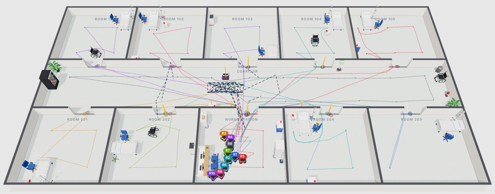
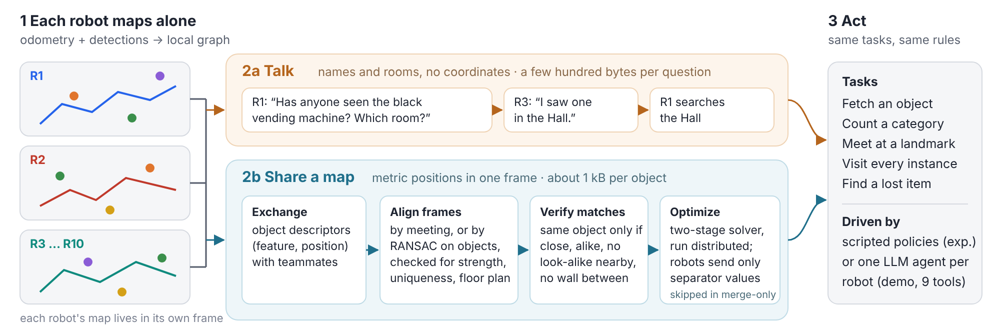

Talk or Map? What Should Robot Teams Share?


When every robot in a team runs its own language-model agent, the team needs a way to pool what its members have seen. Multi-robot LLM systems usually let the robots talk to each other in natural language, while collaborative SLAM systems fuse what the robots have seen into one map. We ask which of the two a team should share, and when. We built Hivemap, an open-source testbed that runs in a web browser. In it, up to ten simulated robots with drifting odometry and open-vocabulary object detections explore six buildings, then carry out five kinds of task: go to an object, count a category, meet at a landmark, visit every instance of a category, and find a lost item. The robots either work alone, exchange short natural-language messages, or merge their object maps through verified cross-robot data association and distributed pose-graph optimization. The whole system, including in-browser language-model agents that choose among these same tools, runs on a laptop.
1. Introduction#
Picture ten robots that have spent the night patrolling a hospital wing. Each one has seen a different part of the building. In the morning a nurse asks one of them to fetch the wheelchair from Room 203, a room that robot has never entered. Somebody on the team has seen that wheelchair. How should that knowledge reach the robot that needs it?
Two research communities have given two different answers. Work on large language models (LLMs) for multi-robot teams gives each robot an agent and lets the agents talk: they negotiate plans (Mandi et al., 2024), decide what to tell their teammates (Zhang et al., 2024), or route messages through a central or hierarchical planner (Chen et al., 2024; Kannan et al., 2024). Work on collaborative SLAM instead fuses the robots’ observations into a single consistent map (Choudhary et al., 2017; Tian et al., 2022; Lajoie & Beltrame, 2024), increasingly with open-vocabulary object labels that a language model can query (Chang et al., 2023b; Gu et al., 2025). Each community tends to assume its own medium. LLM-team papers rarely build a map, and when LLM planners do use a shared map, the map is usually assumed to be correct, with known robot poses (Yu et al., 2023; Shen et al., 2025; Wang et al., 2025). Collaborative SLAM papers measure trajectory error and bandwidth, not whether the map helps a team finish a job.
This paper puts the two media side by side. We hold the buildings, robots, tasks, and decision rules fixed and change only what the robots share:
- Alone: nothing; each robot uses only what it saw itself.
- Language: short natural-language messages that name objects and rooms, as a language agent would write them.
- Map: an object map merged across robots, built under unknown initial frames, verified against perceptual aliasing, and either used as merged or refined by distributed pose-graph optimization (Choudhary et al., 2016; Choudhary et al., 2017).
The map is not handed to the robots. They build it from noisy odometry and detections, find each other’s frames by meeting or by matching objects, and pay for it in bandwidth. Merging errors, rejected look-alike matches, and residual drift are therefore part of what we measure.
Our contributions are:
- Hivemap, an open-source multi-robot testbed that runs in the browser, with up to ten robots, six buildings (including a hospital wing with ten look-alike patient rooms), five task families, and per-robot LLM agents that call mapping and messaging operations as tools (Fig. 1).
- A controlled comparison of the three media over
- Findings on when each medium is enough.
We do not propose a new SLAM back-end or a new LLM planner. The two-stage distributed solver is from our earlier work (Choudhary et al., 2016; Choudhary et al., 2017), the verification rules follow established practice for robust inter-robot loop closures (Mangelson et al., 2018; Yang et al., 2020), and the agents follow the familiar tool-calling pattern (Yao et al., 2023). What is new is the question and the measurement.
2. Related Work#
Collaborative SLAM. Distributed and decentralized multi-robot SLAM has a long history. It includes distributed smoothing (Cunningham et al., 2010), two-stage distributed Gauss-Seidel estimation with object-based landmarks (Choudhary et al., 2016; Choudhary et al., 2017), data-efficient decentralized visual SLAM (Cieslewski et al., 2018), and certifiably correct distributed pose-graph optimization (Tian et al., 2021). Complete systems include DOOR-SLAM (Lajoie et al., 2020), Kimera-Multi (Chang et al., 2021; Tian et al., 2022), Swarm-SLAM (Lajoie & Beltrame, 2024), COVINS (Schmuck et al., 2021), and the field-tested LAMP (Ebadi et al., 2020; Chang et al., 2022); see (Lajoie et al., 2022) for a survey. A wrong inter-robot loop closure can corrupt the whole map, so pairwise consistency maximization (Mangelson et al., 2018) and graduated non-convexity (Yang et al., 2020) are now standard. When the robots’ initial frames are unknown, maps can be merged from direct robot-robot observations (Zhou & Roumeliotis, 2006; Howard, 2006). Hivemap reuses these ideas. These systems are evaluated by trajectory and map accuracy; we evaluate the map by what it lets a team of agents do, and against a language baseline.
Open-vocabulary object maps and scene graphs. Object-level SLAM (Salas-Moreno et al., 2013; Nicholson et al., 2019; Yang & Scherer, 2019) and foundation-model features (Radford et al., 2021; Kirillov et al., 2023; Ravi et al., 2025) have produced maps that can be queried in words, including dense feature fields (Peng et al., 2023; Jatavallabhula et al., 2023) and object graphs (Gu et al., 2024; Werby et al., 2024; Maggio et al., 2024). Multi-robot versions build and share 3D scene graphs (Chang et al., 2023b), compress them for transmission (Chang et al., 2023a), or share open-vocabulary object graphs at a fraction of the bandwidth (Gu et al., 2025). These are more capable map builders than ours, which uses simulated stand-in features (Sec. 6). They do not put language agents in the loop, and they do not compare map sharing with talking.
LLM agents for multi-robot teams. LLMs plan for single robots by grounding language in affordances (Ahn et al., 2022), code (Liang et al., 2023), feedback (Huang et al., 2022b), or a given 3D scene graph (Rana et al., 2023). For teams, RoCo (Mandi et al., 2024) has per-robot LLMs negotiate in dialogue, SMART-LLM (Kannan et al., 2024) decomposes and allocates tasks centrally, and Chen et al. (Chen et al., 2024) compare centralized, decentralized, and hybrid dialogue structures as the team grows. CoELA (Zhang et al., 2024) builds embodied agents that decide what to say to each other and finds that language helps, but that many LLM messages are redundant. A second line gives an LLM or VLM planner a shared semantic map for multi-robot search and navigation (Yu et al., 2023; Shen et al., 2025; Wang et al., 2025); there the map is typically fused centrally under known poses. Murata et al. (Murata et al., 2025) plan multi-object retrieval with knowledge distributed across robots. Prior work therefore fixes the medium, either language or a trusted map. We vary it while holding everything else fixed, and we include the cost and errors of building the map.
Task allocation. Our dispatcher is a classical cost-based allocator (Gerkey & Matarić, 2004; Dias et al., 2006), and our room-splitting search is a simple form of coordinated exploration (Burgard et al., 2005). We claim nothing new here. The point is that path-cost allocation needs metric positions in a common frame, which language replies do not provide.
3. Hivemap#
Fig. 2 shows the pipeline. Each robot builds its own object map. When asked, the team exchanges maps, finds each robot’s frame relative to the others, verifies which objects are shared, and optionally optimizes the joint pose graph. Agents or scripted policies then act on the result. Everything runs in JavaScript in the browser and, for experiments, headless in Node.js with a fixed random seed.


3.1 Buildings, robots, and sensing#
Six floor plans cover common indoor settings: an office (24 m$\times$16 m, 5 rooms), a warehouse with occluding racks and many identical pallets (36$\times$22 m, 3 areas), an apartment (20$\times$14 m, 5 rooms), a hospital wing with ten nearly identical patient rooms off one corridor (36$\times$18 m, 11 rooms), a retail store with shelf aisles (30$\times$20 m, 4 areas), and a lab building (32$\times$18 m, 7 rooms). They contain 33 to 65 objects each, from 51 categories in nine colors. Robots are differential-drive bases (0.56$\times$0.44 m, up to 1 m/s) that plan on an occupancy grid, follow smoothed paths, and yield to each other. They record a keyframe every 0.5 m or 30$^\circ$. Odometry has 3.5% translational and 1.5% rotational noise per step, a per-robot gyro bias of up to 0.014 rad/m, and occasional wheel slip. The camera has a 90$^\circ$ field of view. An object at range $r$ is detected with probability $0.97\,(1-(r/R)^3)$, where $R$ is 2.6 m for small objects, 6 m for large ones, and 5 m otherwise. Walls and tall furniture block the view, 2% of detections are false, and an object enters a robot’s map only after two sightings.
Open-vocabulary features. We do not render images. Each detection carries a 48-dimensional unit descriptor that mixes a fixed direction for its category with a weaker direction for its color, plus view noise. Text queries such as “orange armchair” embed into the same space. This stands in for mask-plus-CLIP features (Ravi et al., 2025; Radford et al., 2021). It reproduces the property that matters here, that objects of the same kind and color look alike, but it is cleaner than real features.
3.2 Local object SLAM#
Each robot keeps a pose graph of its keyframes and the objects it has seen, with odometry factors between consecutive keyframes and relative-pose factors from keyframes to objects. We solve it with the two-stage method of (Choudhary et al., 2016): first rotations, as a linear least-squares problem over unit complex numbers, then translations given the rotations. Both stages use Gauss-Seidel sweeps with successive over-relaxation ($\omega=1.9$) and warm starts.
3.3 Merging maps under unknown frames#
Robots start from a common dock but do not know their relative poses. Each robot’s map is expressed in its own starting frame. To merge maps, robots exchange object descriptors, and the team adds robots one at a time to a growing joint map. We count 1,040 bytes per object sent, as if each descriptor carried a 512-dimensional half-precision CLIP feature plus its position and id.
Frame alignment. If two robots have met (within 4 m with a clear line of sight), the measured relative pose aligns their frames directly, in the spirit of (Zhou & Roumeliotis, 2006; Howard, 2006). Otherwise we propose candidate object matches by descriptor similarity (cosine $>0.8$) and fit a 2D rigid transform with two-point RANSAC. Look-alike rooms make this risky: in the hospital, five patient rooms each hold a bed, a chair, and an IV stand in the same arrangement. We therefore accept an alignment only if it passes three checks. (i) Strength: at least five inliers from at least three categories, or four inliers from two categories with residual below 0.3 m spread over more than 2.5 m. (ii) Uniqueness: no rival hypothesis that places the map more than 1.2 m or 0.3 rad away has more than 60% of the inliers or comes within two inliers of the best. (iii) Floor-plan consistency: once aligned, no more than 2% of the robot’s trajectory may pass through a wall. We assume the floor plan is known, as it usually is for facility robots.
Object association. Given the frames, two objects from different robots become one shared object if they are within 1 m, their descriptors agree, they are not on opposite sides of a wall, and neither robot has a look-alike within a radius $A=\max(1.5,\,2.5(\sigma_a+\sigma_b))$ m. Here $\sigma = 0.1 + 0.04\,d$ grows with the distance $d$ the robot had driven before first seeing the object, so the gate widens with accumulated drift. Each accepted match adds a “same object” factor between the two robots’ landmarks, and each meeting adds a relative-pose factor between their keyframes.
3.4 Distributed optimization#
The joint graph is solved with the same two-stage solver run in its distributed form (Choudhary et al., 2016; Choudhary et al., 2017). Each robot updates only its own poses and landmarks and, after every round, sends its estimates of the variables that appear in factors shared with other robots, the “separators.” If an update grows instead of shrinking, the stage restarts with a smaller relaxation factor. We report the number of rounds and count the bytes they cost.
3.5 From map to action#
Shared objects are fused by union-find over the accepted matches and given a plain-language label and a room. A query such as “the black vending machine” is embedded and matched against this list. With a merged map, every robot can compute path costs to every object in one frame. This is what lets the dispatcher assign the closest free robot, split a category’s instances among robots, or pick meeting slots around a landmark.
3.6 Language-model agents#
In the interactive demo, each robot runs its own agent: an open Qwen2.5 model (Team et al., 2024) (1.5B, 3B, or 7B parameters) running on the visitor’s GPU through WebLLM (Ruan et al., 2024), with replies constrained to a JSON schema. Every turn, the agent sees the team state (robot positions and jobs, explored rooms, the objects it knows with their ids, rooms, and positions) and picks one of nine tools: search_map, navigate_to, go_to_room, explore_room, exchange_maps, optimize_team_map, ask_robot, return_to_start, or reply. ask_robot is the language channel: it forwards a message to another robot’s agent, which answers from its own state. exchange_maps and optimize_team_map are the map channel. Without a GPU, a rule-based planner drives the same tools.
4. Experimental Setup#
Separating the medium from the planner. Small language models make planning mistakes. In an end-to-end comparison those mistakes would mix with the effect of the medium, and we could not run thousands of episodes of in-browser inference. We therefore drive each condition with a fixed, competent scripted policy that uses its channel the way a good agent would. The result measures what each medium makes possible for a sensible policy, not how well a particular language model uses it. We return to this choice in Sec. 6.
Conditions. All conditions start from the identical world state, including the same robot trajectories and observations; we check this with a fingerprint of the state.
- Alone: each robot uses only its own map and explores rooms it has not seen until it finds what it needs.
- Language: robots exchange template sentences of the kind an LLM agent produces, e.g. “Has anyone seen the black vending machine? Which room is it in?” and “I saw a black vending machine in the Hall.” Every teammate that has seen a match answers truthfully and at once. Answers name the object and its room but never give coordinates, because without a shared frame one robot’s coordinates mean nothing to another. The asking robot searches the named rooms in order of how many teammates named them, then by distance, and stops as soon as it sees the object itself. For counts, robots cannot tell whether two teammates saw the same chair, so the asker takes the largest count reported for each room; summing counts is an ablation.
- Map: maps are exchanged and merged as in Sec. 3.3, and the policy queries the merged map and drives straight to the merged object positions. Map (merge only) skips the distributed optimization and keeps the RANSAC or meeting alignment; Map + opt. runs it.
The language channel is generous by design: messages are free, instant, and never lost, every teammate answers, and the asker never misreads an answer.
Protocol. Each episode has two phases. In a prior shift, the robots split the rooms round-robin and cover them, so each robot knows only part of the building. Then a task is issued:
- Fetch: Robot 1 goes to a named object, e.g. “bring a sensor reading from the black vending machine.” The target is chosen among objects seen by a teammate but not by Robot 1, with a name (color and category, plus room if needed) that picks out one object.
- Inventory: Robot 1 reports how many objects of a category exist and in which rooms; the score is the fraction of rooms whose count is correct.
- Rendezvous: all robots meet at a named object; the score is the fraction that arrive.
- Dispatch: the team visits every instance of a category (e.g. every fire extinguisher); the score is the fraction visited.
- Search: an object that appeared after the prior shift (e.g. a lost backpack) must be found, and Robot 1 must drive to it.
A robot has reached an object when it stops within the object’s radius plus 1 m of its true position.
Metrics. We report success (score of 1), mean score, completion time in simulated seconds, total distance driven, and bytes sent. For Language, bytes are the UTF-8 length of each message, counted once per recipient. For Map, they are the object descriptors sent to each joined teammate plus the separator estimates sent in each optimization round.
Grid.
5. Results#
6. Limitations#
Simulated perception. Our descriptors are synthetic. Real mask-plus-CLIP features are noisier, confuse more categories, and drift with viewpoint and lighting, so real data would produce more look-alike matches. This would likely widen the gap between verified and unverified merging, but we have not shown it. Multi-robot open-vocabulary mappers on real sensors (Chang et al., 2023b; Gu et al., 2025; Tian et al., 2022) are the natural back-end for a real deployment.
Scripted policies instead of LLMs. We isolate the medium by using fixed policies. Real LLM agents make planning errors, and their errors may differ by medium. A structured map may be easier for a small model to use correctly than a set of free-form replies, as CoELA’s observations of redundant messages suggest (Zhang et al., 2024), or a long object list may overflow a small model’s context. Measuring that interaction with the in-browser agents is the next step.
A generous, but limited, language channel. Our messages carry object names and rooms, not metric descriptions such as “two meters left of the door.” Agents could describe positions relative to landmarks, which would close part of the gap at the cost of longer, more ambiguous messages. Conversely, our channel is lossless and instant, which favors language.
Scale and realism. The buildings are small and two-dimensional, and the robots are homogeneous. The map’s advantage should grow with building size, since the cost of searching a room grows while the cost of driving to a known point does not, but larger and multi-floor buildings remain to be tested.
7. Conclusion#
The code, the experiment harness, and the per-episode results are available at itzsid.github.io/hivemap/, where the simulation and its agents run in the browser.
References#
- [Ahn et al., 2022] Do As I Can, Not As I Say: Grounding Language in Robotic Affordances. CoRL, 2022.
- [Burgard et al., 2005] Coordinated Multi-Robot Exploration. IEEE Transactions on Robotics, 2005.
- [Chang et al., 2021] Kimera-Multi: a System for Distributed Multi-Robot Metric-Semantic Simultaneous Localization and Mapping. ICRA, 2021.
- [Chang et al., 2022] LAMP 2.0: A Robust Multi-Robot SLAM System for Operation in Challenging Large-Scale Underground Environments. IEEE Robotics and Automation Letters, 2022.
- [Chang et al., 2023b] Hydra-Multi: Collaborative Online Construction of 3D Scene Graphs with Multi-Robot Teams. IROS, 2023.
- [Chang et al., 2023a] D-Lite: Navigation-Oriented Compression of 3D Scene Graphs for Multi-Robot Collaboration. IEEE Robotics and Automation Letters, 2023.
- [Chen et al., 2024] Scalable Multi-Robot Collaboration with Large Language Models: Centralized or Decentralized Systems?. ICRA, 2024.
- [Choudhary et al., 2016] Distributed Trajectory Estimation with Privacy and Communication Constraints: A Two-Stage Distributed Gauss-Seidel Approach. ICRA, 2016.
- [Choudhary et al., 2017] Distributed Mapping with Privacy and Communication Constraints: Lightweight Algorithms and Object-based Models. The International Journal of Robotics Research, 2017.
- [Cieslewski et al., 2018] Data-Efficient Decentralized Visual SLAM. ICRA, 2018.
- [Cunningham et al., 2010] DDF-SAM: Fully Distributed SLAM using Constrained Factor Graphs. IROS, 2010.
- [Dias et al., 2006] Market-Based Multirobot Coordination: A Survey and Analysis. Proceedings of the IEEE, 2006.
- [Ebadi et al., 2020] LAMP: Large-Scale Autonomous Mapping and Positioning for Exploration of Perceptually-Degraded Subterranean Environments. ICRA, 2020.
- [Gerkey & Matarić, 2004] A Formal Analysis and Taxonomy of Task Allocation in Multi-Robot Systems. The International Journal of Robotics Research, 2004.
- [Gu et al., 2024] ConceptGraphs: Open-Vocabulary 3D Scene Graphs for Perception and Planning. ICRA, 2024.
- [Gu et al., 2025] MR-COGraphs: Communication-Efficient Multi-Robot Open-Vocabulary Mapping System via 3D Scene Graphs. IEEE Robotics and Automation Letters, 2025.
- [Howard, 2006] Multi-robot Simultaneous Localization and Mapping using Particle Filters. The International Journal of Robotics Research, 2006.
- [Huang et al., 2022b] Inner Monologue: Embodied Reasoning through Planning with Language Models. CoRL, 2022.
- [Jatavallabhula et al., 2023] ConceptFusion: Open-set Multimodal 3D Mapping. RSS, 2023.
- [Kannan et al., 2024] SMART-LLM: Smart Multi-Agent Robot Task Planning using Large Language Models. IROS, 2024.
- [Kirillov et al., 2023] Segment Anything. ICCV, 2023.
- [Lajoie et al., 2020] DOOR-SLAM: Distributed, Online, and Outlier Resilient SLAM for Robotic Teams. IEEE Robotics and Automation Letters, 2020.
- [Lajoie et al., 2022] Towards Collaborative Simultaneous Localization and Mapping: a Survey of the Current Research Landscape. Field Robotics, 2022.
- [Lajoie & Beltrame, 2024] Swarm-SLAM: Sparse Decentralized Collaborative Simultaneous Localization and Mapping Framework for Multi-Robot Systems. IEEE Robotics and Automation Letters, 2024.
- [Liang et al., 2023] Code as Policies: Language Model Programs for Embodied Control. ICRA, 2023.
- [Maggio et al., 2024] Clio: Real-time Task-Driven Open-Set 3D Scene Graphs. IEEE Robotics and Automation Letters, 2024.
- [Mandi et al., 2024] RoCo: Dialectic Multi-Robot Collaboration with Large Language Models. ICRA, 2024.
- [Mangelson et al., 2018] Pairwise Consistent Measurement Set Maximization for Robust Multi-Robot Map Merging. ICRA, 2018.
- [Murata et al., 2025] Multi-Robot Task Planning for Multi-Object Retrieval Tasks with Distributed On-Site Knowledge via Large Language Models. arXiv:2509.12838, 2025.
- [Nicholson et al., 2019] QuadricSLAM: Dual Quadrics From Object Detections as Landmarks in Object-Oriented SLAM. IEEE Robotics and Automation Letters, 2019.
- [Peng et al., 2023] OpenScene: 3D Scene Understanding with Open Vocabularies. CVPR, 2023.
- [Radford et al., 2021] Learning Transferable Visual Models From Natural Language Supervision. ICML, 2021.
- [Rana et al., 2023] SayPlan: Grounding Large Language Models using 3D Scene Graphs for Scalable Robot Task Planning. CoRL, 2023.
- [Ravi et al., 2025] SAM 2: Segment Anything in Images and Videos. ICLR, 2025.
- [Ruan et al., 2024] WebLLM: A High-Performance In-Browser LLM Inference Engine. arXiv:2412.15803, 2024.
- [Salas-Moreno et al., 2013] SLAM++: Simultaneous Localisation and Mapping at the Level of Objects. CVPR, 2013.
- [Schmuck et al., 2021] COVINS: Visual-Inertial SLAM for Centralized Collaboration. ISMAR-Adjunct, 2021.
- [Team et al., 2024] Qwen2.5 Technical Report. arXiv:2412.15115, 2024.
- [Tian et al., 2021] Distributed Certifiably Correct Pose-Graph Optimization. IEEE Transactions on Robotics, 2021.
- [Tian et al., 2022] Kimera-Multi: Robust, Distributed, Dense Metric-Semantic SLAM for Multi-Robot Systems. IEEE Transactions on Robotics, 2022.
- [Wang et al., 2025] COMRES-VLM: Coordinated Multi-Robot Exploration and Search using Vision Language Models. arXiv:2509.26324, 2025.
- [Werby et al., 2024] Hierarchical Open-Vocabulary 3D Scene Graphs for Language-Grounded Robot Navigation. RSS, 2024.
- [Yang & Scherer, 2019] CubeSLAM: Monocular 3-D Object SLAM. IEEE Transactions on Robotics, 2019.
- [Yang et al., 2020] Graduated Non-Convexity for Robust Spatial Perception: From Non-Minimal Solvers to Global Outlier Rejection. IEEE Robotics and Automation Letters, 2020.
- [Yao et al., 2023] ReAct: Synergizing Reasoning and Acting in Language Models. ICLR, 2023.
- [Zhang et al., 2024] Building Cooperative Embodied Agents Modularly with Large Language Models. ICLR, 2024.
- [Zhou & Roumeliotis, 2006] Multi-robot SLAM with Unknown Initial Correspondence: The Robot Rendezvous Case. IROS, 2006.
BibTeX#
@misc{choudhary2026talkormap,
title = {Talk or Map? What Should Robot Teams Share?},
author = {Choudhary, Siddharth},
year = {2026},
note = {Preprint},
url = {https://itzsid.github.io/hivemap/paper/}
}